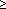

Pade Approximation VI
Owning Palette: Rational Polynomial VIs
Requires: Full Development System
Determines the coefficients of a rational polynomial to best suit a given set of derivatives.

 Add to the block diagram Add to the block diagram |
 Find on the palette Find on the palette |
Owning Palette: Rational Polynomial VIs
Requires: Full Development System
Determines the coefficients of a rational polynomial to best suit a given set of derivatives.
| Add to the block diagram |
Find on the palette |
 |
Derivatives is the array that describes the derivatives of the given function. |
 |
m specifies the degree of the Numerator polynomial. |
|
n specifies the degree of the Denominator polynomial. |
 |
Numerator returns the numerator polynomial coefficients in ascending order of power. |
|
Denominator returns the denominator polynomial coefficients in ascending order of power. |
 |
error returns any error or warning from the VI. You can wire error to the Error Cluster From Error Code VI to convert the error code or warning into an error cluster. |
Let f be a given function with known derivatives and values
f(0), f´(0), …, f (m + n)(0)
There is a unique rational polynomial
m  n
with
R(0) = f(0), R´(0) = f´(0), …, R(m + n)(0) = f (m + n)(0)
The rational polynomial can be determined by solving a special linear equation.